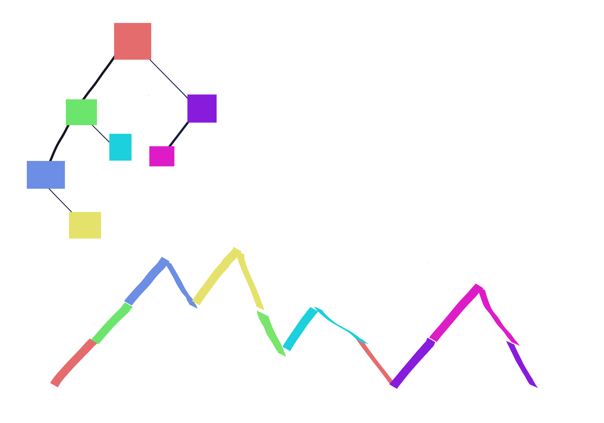
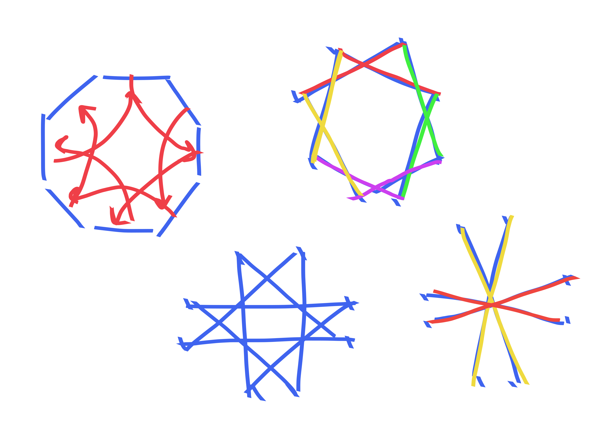
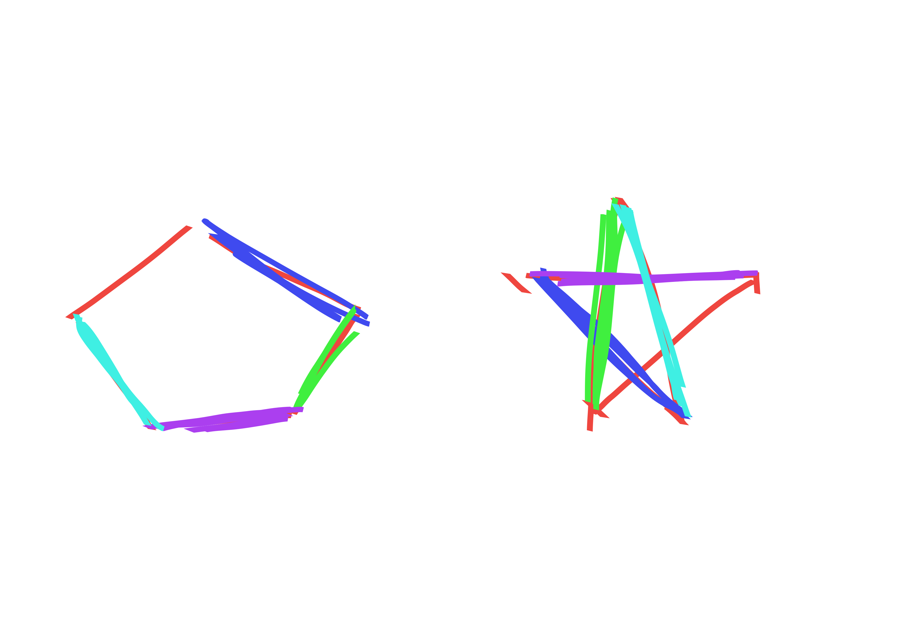

{UUU dyck path}
Let \(C_{n}=\frac{1}{n+1}\binom{2n}{n}\) denote the \(n\)-th Catalan number. We have seen that \(C_n\) counts the number of Dyck paths with \(n\) up steps and \(n\) down steps. Let \(A_{n}\) denote the number of Dyck paths with \(n\) up steps and \(n\) down steps where the first \(3\) steps are up steps. The goal of this problem is to determine \(A_{n}.\)
Proposition. \(A_{n}=C_n-2C_{n-1}\)
Proof. The first step of a Dyck path must be up. Then, it can either go up or down. If the first two steps are up steps the third step can also be chosen from up and down.
The total number of Dyck paths is the sum of these three disjoint starting possibilities: UUU, UUD, UD. Note that the number of Dyck paths that start with UUU is precisely \(A_n\), while the number of Dyck paths starting with \(UD\) is precisely \(C_{n-1}\) because we have arrived back on the \(x\)-axis, and the number of Dyck paths starting with UUD is also \(C_{n-1}\) because the first mvoe of any Dyck path must be an up step, so we can think of our path from now on as being the remainder of such a path.
Thus, \[C_n = 2C_{n-1}+A_n.\]
Re-arranging gives \[A_n = C_n - 2C_{n-1} = \frac{1}{n+1}\binom{2n}{n} - \frac{2}{n}\binom{2n-2}{n-1} = \binom{2n-2}{n-1}2(n-2) = 2n(n-2)C_{n-1}.\]
{bijection of trees}
We showed in class that the number of plane trees with \(n+1\) vertices is \(C_n\), i.e. the number of Dyck paths with \(n\) up and \(n\) down steps. The bijection is straightforward: take a depth-first traversal of a plane tree with \(n+1\) vertices (and thus \(n\) edges); each step away from the root is turned into an up step in the Dyck path, and each step towards the root becomes a down step. The process is clearly invertable: we can generate the tree from it’s depth-first traversal sequence. To count Dyck paths, we reasoned as follows in lecture: let \(2k \in \left\{ 2,4,6,\ldots, 2n\right\}\) be the first time that the Dyck path comes back down to height \(0\). Then, the Dyck path is clearly composed of an up step, followed by a Dyck path of length \(2k-2\) shifted up \(1\) unit followed by a down step. After hitting height \(0\) we can do another Dyck path now of length \(2n-2k.\) This gives the well-known recurrence \[C_n = \sum_{k=1}^n C_{k-1}C_{n-k} = \sum_{k=0}^{n-1}C_{k}C_{n-k-1}.\] But it also gives us more than just a recurrence: it gives us a way of thinking about how Dyck paths are recursively composed of smaller shifted Dyck paths.
Now we will show that binary trees with \(n\) vertices exhibit the same recursive structure. One consequence of this is that the numbers \(B_n\), which we use to denote the number of binary trees on \(n\) vertices, obeys the same recurrence as \(C_n\). But more interestingly, the fact that both objects have the same recursive structure allows us to form an algorithm that converts between the two objects, i.e. a bijection. We can see that a binary tree will have a root, and then some number \(k\in 0,1,\ldots, n-1\) of nodes to its left, with the remaining \(n-k-1\) of nodes being to the right of the root (i.e. descendants via its right child, if there is a right child). In other words, \[B_n = \sum_{k=0}^{n-1} B_k B_{n-k-1}.\] Now, checking / defining that \(B_0=C_0 = 1, B_1=C_1=1\) suffices to prove that the sequences are equal, but doesn’t quite give us an understanding of why they are equal.
Now we exhibit a bijection between binary trees and dyck paths; combined with our bijection between dyck paths and plane binary trees this constitutes a bijective proof that \(B_n = C_n\).
Consider a binary tree; we associate a Dyck path with it. If the root has no left children, the associated Dyck path starts with up, down and then the remainder of the Dyck path is the Dyck path associated with the right sub-tree. If the root has left children, the associated Dyck path will be up, then the Dyck path for the left sub-tree, and finally down, and then followed by the right sub-tree’s associated Dyck tree (if the right sub-tree is non-empty). The conversion backwards is similarly straightforward. If we consider a segment with length \(2k+2\) of a Dyck path that starts and ends at height \(0\) but does not touch height \(0\) in the middle, then we recursively use this segement to construct the left sub-tree of the root in the associated tree. In particualr, if \(k=0\) this corresponds to up down. This is better described via a picture: 
{3}
The bijection is as follows: draw the non-crossing set partition in a circle as a set of non-crossing polygons by connecting the points in the same parts of the partition. Now, put a “dual vertex” on the midpoint of each edge of the original diagram. Connect two dual vertices iff doing so is possible without crossing the original diagram’s polygons. If the original diagram had \(k\) sets in the partition, then this new diagram will have \(n-k+1\). And, if we apply the transformation again then we get back the original set partition, so the transformation is a bijection of non-crossing set partitions with \(k\) blocks to those with \(n-k+1\) blocks.
{modmaj, modinv}
It is well known that major index is equidistributed with number of inversions. Thus, we may consider instead the number of permutations with a number of inversions which has some \(k\) under \(\mod n\). Consider a random permutation. It will have some number of inversions contributed by pairs of elements in \([n-1]\). Then, there will be some inversions which are inversions with element \(n\). If we are considering a random permutation then \(n\) is equally likely to be inverted with any number of other elements. If the number of inversions was some number \(k\) just counting elements pairs in \([n-1]\), then we see that it will be equally likely to be any value \(k+0,k+1,k+2,\ldots, k+n-1\) after considering the last one. But of course, this means that it is uniformly randomly distributed on \([n]\) if we consider it \(\mod n\). This is equivalent to the desired result because the probability of having modinv of \(k\) is simply the number of permutations with modinv \(k\) divided by \(n!\).
In fact, Major index has this same property: that randomly adding \(n\) into a permutation of length \(n-1\) increases the major index by a uniformly random value in \([n]-1\). Thus, the following Proposition more directly establishes the result desired in the problem.Proposition. If we consider each possible way to form \(\pi'\) from \(\pi\in S_{n-1}\) by inserting \(n\) into \(\pi\) at some location, then there is exactly one such way which will result in \(inv(\pi')-inv(\pi) = k\) and also exactly one way to result in \(maj(\pi')-maj(\pi) = k\) for any \(k\in [0,n-1]\).
Proof. For inversions this is obvious: if we place \(n\) at position \(k\in [n]\) in the one-line notation for the number then it will be inverted with all \(n-k\) elements to its right.
This is less obvious for \(maj\), but still true. Again, we fix \(\pi\in S_{n-1}\) and consider all ways to add \(n\) to \(\pi\), and the corresponding effect on major index. Let \(des_\pi(k)\) denote the number of descents after index \(k\) in \(\pi\). If we insert \(n\) at the end of \(\pi\) then the major index does not increase. We break the remaining inserts into two possible cases:Let \(d\) denote the number of descents in \(\pi\). We can see that the annihilating inserts which corresponds to changes of \(1+des_\pi(k)\) in major index will range over \(1,2,\ldots, d\), hitting each value exactly once, because if we go from the right heading left then each annihilation corresponds to another descent which is now to our right. On the other hand, if we consider the non-annihilating inserts starting from the left, i.e. index \(1\), we see that they will range over \(d+1, d+2, \ldots, n-1\) hitting each value exactly once. In particular, this is because if we pass an ascent then \(k+des_\pi(k)\) increases by \(1\) due to \(k\) increasing by \(1\), but when we pass a descent \(k+des_\pi(k)\) does not change because the increase in \(k\) is offset by us having less descents to our right. This concludes the proof.
Proof. As an immediate corollary of , we have that \(inv, maj\) have the same generating functions (after checking the base case of course), namely, if we let \(inv(n,s)\) denote the number of permutations of \([n]\) with \(s\) inversions then: \(inv(n,s) = \sum_{k=0}^{n-1} inv(n-1, s-k).\)
However, we actually also can infer a bijection from to better understand the relationship between these statistics. In particular we can make a recursive algorithm which forms a bijection \(\phi\) such that \(maj(\phi(\pi)) = inv(\pi)\). The bijection is as follows: say you had a permutation \(\pi \in S_n\). Recursively compute \(\phi\) on \(\pi_0\) which is \(\pi\) but with \(n\) excluded (i.e. write \(\pi\) in one-line notation, and then delete \(n\) and interpret the resulting string as a permutation in one-line notation.) Now, in \(\pi\), \(n\) is inverted with some number \(k\in [0,n-1]\) of other elements. Insert \(n\) into \(\phi(\pi_0)\) to get \(\phi(\pi)\) in such a way that \(maj(\phi(\pi)) - maj(\phi(\pi_0)) = k\).
See the figure below for a nice representaton of .
% 5 # {color permutation} We prefer to write the rising-factorial as \[x(x+1)(x+2)\cdots (x-1+n) = \binom{x-1+n}{x-1}n!\] which is true for all \(x\in \mathbb{N}.\) We denote the Stirling number of first kind, i.e. the number of permutations of \([n]\) with \(k\) cycles by \(\genfrac[]{0pt}{}{n}{k}\). Let \(S_n\) be the symmetric group on \(n\) elements. We define a of \(\pi\in S_n\) with \(x\) colors to be a map \(f:[n]\to [x]\) which assigns one of \(x\) colors to each element of the permutation. Finally, we say that a coloring is a if any elements \(i,j\) involved in the same cycle of the colored permutation have the same color.
Proposition. \[\binom{x-1+n}{x-1}n!,\quad\quad \sum_{k=0}^n \genfrac[]{0pt}{}{n}{k} x^k\] both count the number of \(x\)-color cycle-monochromatic colorings of permutations of \([n]\).
Proof. The expression \(\genfrac[]{0pt}{}{n}{k}x^k\) counts the number of permutations of \([n]\) with \(k\) cycles times \(x\) choices per cycle for the color of the cycle. Summing over all \(k\) this clearly counts the total number of ways to color permutations such that elements in the same cycle get the same color.
Now we count the number of cycle-monochromatic colorings of permutations where we must use \(b_1\) of color \(1\), \(b_2\) of color \(2\), etc, with \(b_i\in [x]\) for each \(i\in [x]\) and \(\sum b_i = n\). To construct such a permutation and coloring, we could first decide on which elements will be assigned to each color. This can be accomplished in \(n! / \prod_i b_i\) ways; it is equivalent to forming an \(n\)-letter word using \(b_i\) of letter \(i\) and using character \(i\) of the word to color the element \(i\in [n]\). Then, if we have decided which elements to assign to each color class, there are \(\prod_i b_i\) ways to make the permutations, where all permutations can only send numbers to other numbers of the same color. In total this means that once we have decided on the partition \(b_i\) of how many of each color to use, there are \(n!\) ways to perform the coloring and permutation. The number of ways to form this partition is \(\binom{x-1+n}{x-1}\) because we can think of inserting \(x-1\) dividers into a string of length \(n\), where the dividers will divide the string into color classes. Thus, \(\binom{x-1+n}{x-1}n!\) also counts the number of permutations with elements of the same cycle having the same color.
Because the expressions count the same quantity for each \(x\in \mathbb{N}\), and because they are continuous in \(x\), we have that the two desired expressions are equal.
{exceedences, weak exceedences}
Proposition. The number of permutations with \(k\) exceedences is the same as the number of permutations with \(k+1\) weak exceedences.
Proof. Consider a permutation \(\pi \in S_n\) written in one-line notation with \(k\) exceedences. Note that there is never an exceedence at index \(n\), because \(\pi_n>n\) is impossible. Now, form \(\pi'\) by moving the final character in \(\pi\)’s one-line notation to the start. In other words, \(\pi' = \pi_n \pi_1 \pi_2 \pi_3 \cdots \pi_{n-1}\) in one line notation. Note that there is always a weak exceedence at index \(1\) because \(\pi'_1 \geq 1\) is trivially satisfied. We claim that there are exactly \(k+1\) weak exceedences in \(\pi'\). If we can establish this we are finished because this transformation is a bijection (with the inverse achieved by shifting backwards).
For every index \(i<n\) corresponding to an exceedence in \(\pi\) we have \(\pi_i > i\). Then, in \(\pi'\) we have \(\pi_{i+1}' = \pi_{i} > i \implies \pi_{i+1}' \geq i+1\) so there is an exceedence at \(i+1\) in \(\pi'\). In fact this is if and only if. If \(\pi_i \leq i\) then \(\pi_{i+1}' = \pi_{i} \leq i\) so there is not an exceedence at \(i+1\) in \(\pi'\).
{coloring with skips}
Let \(\genfrac\{\}{0pt}{}{n}{k}\) denote the number of partitions of \([n]\) with \(k\) blocks, and let \(\genfrac\langle\rangle{0pt}{}{n}{k}\) denote the number of permutations of \([n]\) with \(k\) descents.Proposition. \[\sum_{k\in [n]}\genfrac\{\}{0pt}{}{n}{k}k! x^{n-k} = \sum_{k=0}^{n-1} \genfrac\langle\rangle{0pt}{}{n}{k} (x+1)^{k},\] because for any \(x\in \mathbb{N}\) both quantities count the number of ways to color a permutation of length \(n\) with \(x\) colors, except that some points are allowed to be left uncolored, in particular descents may not be colored.
Proof. First we show LHS accurately counts the combinatorial object we defined in the Proposition statement. The LHS can be interpretted as follows: take an ordered set partition of \([n]\), arrange the elements within each block of the partition in increasing order, and then color all but the final element of each block using any of \(x\) colors. The final element of each block is left uncolored. This corresponds exactly to a permutation where descents and some other points have been left uncolored, but each other point is colored with one of \(x\) colors. In particular, the set partition is recoverable from the colored permutation by writing the permutation in one-line notation, and breaking it into pieces on the non-colored elements.
Now we show that the RHS counts the same quantity. Actually, for the RHS we should first make use of the fact that Euler numbers are symmetric, i.e. \(\genfrac\langle\rangle{0pt}{}{n}{k} = \genfrac\langle\rangle{0pt}{}{n}{n-k-1}\) which is because given a permutation \(\pi\) with \(k\) descents, the permutation \(\pi^{-1}\) has \(n-k-1\) descents. Thus we may re-write the RHS as \[\sum_{k=0}^{n-1}\genfrac\langle\rangle{0pt}{}{n}{k}(x+1)^{n-k-1}.\] Now we can interpret the RHS combinatorially as saying take a permutation with some number \(k\) of descents, and then color each non-descent element with one of \(x\) colors, or decline to color it (this is the \(+1\)). Again, we see that this corresponds exactly to generating a permutation colored according to our specification. Thus the expressions are equal.
{a map of edges of \(K_n\)}
First we consider \(n\) which is even. For each \(i\in [n], j\in[\frac{n}{2}-1]\) there is an edge \((i,i+j)\) where the addition is done \(\mod n\). Also, there are an additional \(\frac{n}{2}\) edges of the form \((i, i+\frac{n}{2})\) for \(i\in [\frac{n}{2}]\). For \(j>1\), the edges \((i,i+j),(i+1,i+j+1)\) do not share any vertices. For \(j=1\) we note that the edges \((i,i+1)\) and \((i+2,i+3)\) do not share any vertices. Thus the map \[(i,i+j)\mapsto (i+1,i+j+1) \forall i\in [n],j>1\] \[(i,i+1)\mapsto (i+2,i+3), \forall i \in [n]\] is a map \(f\) of edges such that \(e,f(e)\) share no vertices.
For \(n\) which is odd, we use a different construction. Let \(n=2k+1\) for some \(k\in \mathbb{N}\). For odd \(n\) we actually have edges of the form \((i,i+j)\) for each \(i\in [n], j\in [k]\). We observe that the following set of edges is “vertex disjoint” (i.e. they share no vertices): \[(i,i+1), (i+2,i+4), (i+3,i+6), \ldots, (i+k, i+2k).\] Thus, we propose the following map: \[(i,i+j)\mapsto (i+1,i+j+2)\] where again, everything is \(\mod n\).
Here are some pictures that do a better job describing this:
 
{bonus: boolean lattice}
more explicitely construct the boolean lattice. 3: needs more than just a picture.